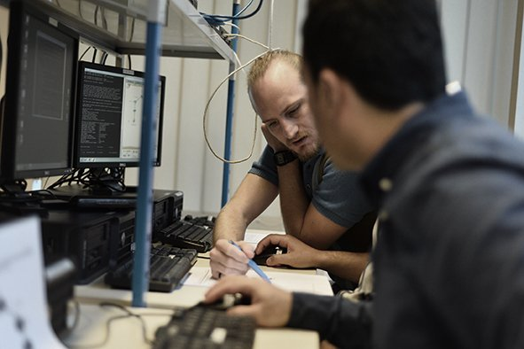

Praktijklabs
70% praktijklabs rond hardware, netwerken en security
Bouw je toekomst in ICT-support met een hands-on traject dat hardware, netwerken en klantgerichte service verenigt. Je leert storingen analyseren, systemen beveiligen en gebruikers professioneel begeleiden.

Leren in kleine groepen, moderne labs en coaching door experten uit het werkveld.
Schrijf je in tot zes maanden voor de start. Infosessies en assessments helpen je bepalen of dit traject bij je past.
Je groeit uit tot het eerste aanspreekpunt voor werkplekken, servers en gebruikers. Je combineert troubleshooting met proactieve monitoring en documentatie volgens ITIL-standaarden.
Naast techniek werken we aan communicatie, service skills en werkplekorganisatie. Zo kan je helder rapporteren, prioriteiten stellen en teams ondersteunen in hybride omgevingen.
70% praktijklabs rond hardware, netwerken en security
Stage bij een partnerbedrijf of social-profitorganisatie
Begeleiding door digicoaches en taalondersteuning
Softskills: klantcommunicatie, teamwork en planning
Een combinatie van fundamenten en specialisaties maakt je klaar voor helpdesk, onsite support of technisch beheer bij kmo's, overheden en integratoren.
Assemblage, imaging, onderhoud en troubleshooting van pc's, laptops en randapparatuur. Je werkt met diagnostische tools en volgt best practices voor lifecyclemanagement.
LAN/WAN-basics, Wi-Fi, routing & switching, introductie tot Azure en M365-beheer. Je leert configureren, monitoren en incidenten oplossen.
Windows 11, Windows Server en Linux-basics. Automatisering met PowerShell, rechtenbeheer en veilige configuraties.
Endpointbescherming, back-up, disaster recovery en documentatie. Werk met ITIL-processen, SLA's en servicedesk-tools.
Heb je specifieke behoeften om te kunnen deelnemen aan de selectie of opleiding? Bijvoorbeeld omwille van een fysieke beperking. Laat het ons weten.
Campus Rouppeplein 16, 1000 Brussel. Deze locatie is zeer goed bereikbaar met het openbaar vervoer.
Ontdek wat deze opleiding uniek maakt en welke carrièremogelijkheden je krijgt na afloop.
Een combinatie van theorie, praktijk en persoonlijke begeleiding
Als PC en Netwerktechnicus leer je niet alleen technische systemen installeren en onderhouden, maar ook hoe je gebruikers ondersteunt en complexe problemen op een begrijpelijke manier uitlegt.
Functies waarvoor je na deze opleiding in aanmerking komt
De vraag naar gekwalificeerde IT-technici blijft hoog. Bedrijven zoeken professionals die technische kennis combineren met klantgericht denken. Deze opleiding geeft je precies die mix van hard en soft skills die werkgevers waarderen.
Plan je intake en ontdek hoe we jouw leerpad personaliseren. Onze coaches staan klaar om al je vragen te beantwoorden.
Neem contact op en ontdek hoe we kunnen samenwerken rond trajecten, stages of coaching.